| 到期价格 \(S_T\) | 股票多头 | 看涨期权空头 (\(K=50\)) | 权利金合计 | 净损益总计 |
|---|---|---|---|---|
| \( S_T < 50 \) | \( S_T - 48 \) | \( 0 \) | \( +1 \) | \( S_T - 47 \) |
| \( S_T \ge 50 \) | \( S_T - 48 \) | \( 50 - S_T \) | \( +1 \) | +3 |
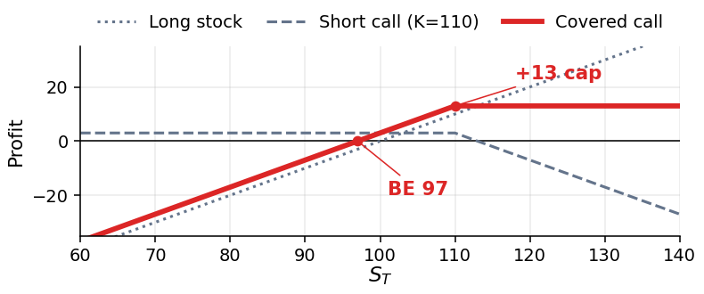
| Terminal Price | Long Stock | Short Call (\(K=50\)) | Total Premium | Total P/L |
|---|---|---|---|---|
| \( S_T < 50 \) | \( S_T - 48 \) | \( 0 \) | \( +1 \) | \( S_T - 47 \) |
| \( S_T \ge 50 \) | \( S_T - 48 \) | \( 50 - S_T \) | \( +1 \) | +3 |
| 到期价格 \(S_T\) | 股票多头 | 看跌期权多头 (\(K=50\)) | 权利金合计 | 净损益总计 |
|---|---|---|---|---|
| \( S_T < 50 \) | \( S_T - 48 \) | \( 50 - S_T \) | \( -3 \) | −1 |
| \( S_T \ge 50 \) | \( S_T - 48 \) | \( 0 \) | \( -3 \) | \( S_T - 51 \) |
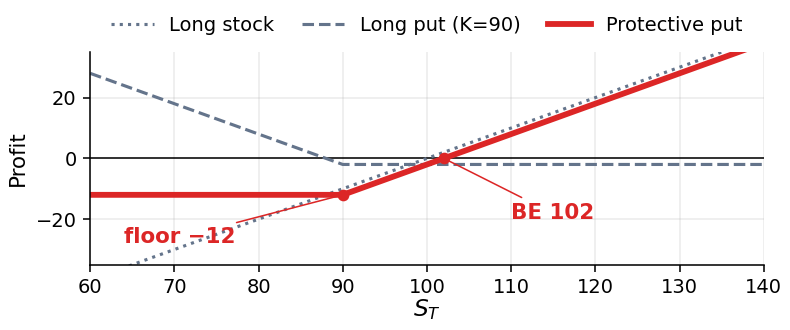
| Terminal Price | Long Stock | Long Put (\(K=50\)) | Total Premium | Total P/L |
|---|---|---|---|---|
| \( S_T < 50 \) | \( S_T - 48 \) | \( 50 - S_T \) | \( -3 \) | −1 |
| \( S_T \ge 50 \) | \( S_T - 48 \) | \( 0 \) | \( -3 \) | \( S_T - 51 \) |
核心策略差异：备兑看涨期权是一种收益增强策略 (Income-generation)，通过放弃上方收益潜力换取前期的现金期权费。而保护性看跌期权则是一种资本保全策略 (Capital preservation)，通过前期支付现金成本来彻底消除灾难性的尾部下行风险。
| 分析维度 | 备兑看涨期权 (\(S_0 - c\)) | 保护性看跌期权 (\(S_0 + p\)) |
|---|---|---|
| 首要目标 | 获取权利金收益；在盘整市场中增强回报 | 防范市场崩盘风险；保全资本 |
| 期初现金流 | 现金净流入 (+) 来自卖出看涨期权 | 现金净流出 (−) 用于买入看跌期权 |
| 最大利润 | 封顶上限：\( K - S_0 + c \) | 无限盈利：\( S_T - (S_0 + p) \) |
| 最大亏损 | 实质性下行风险：\( S_0 - c \) (若股价跌至 $0) | 严格锁定上限：\( S_0 + p - K \) |
| 盈亏平衡点 | 下移至：\( S_0 - c \) | 上移至：\( S_0 + p \) |
| 合成头寸等价性 | 经济实质等同于卖出看跌期权 (Short Put)：\( -p + K e^{-rT} \) | 经济实质等同于买入看涨期权 (Long Call)：\( c + K e^{-rT} \) |
Strategic Distinction: The covered call is an income-generation strategy that surrenders upside for upfront cash yield. The protective put is a capital preservation strategy that pays cash upfront to eliminate catastrophic tail risk.
| Dimension | Covered Call (\(S_0 - c\)) | Protective Put (\(S_0 + p\)) |
|---|---|---|
| Primary Objective | Generate yield; enhance returns in stagnant market | Insure against market crashes; preserve capital |
| Upfront Cash Flow | Cash Inflow (+) from writing the call | Cash Outflow (−) to buy the put |
| Maximum Profit | Capped at: \( K - S_0 + c \) | Unlimited: \( S_T - (S_0 + p) \) |
| Maximum Loss | Substantial downside: \( S_0 - c \) (if stock goes to $0) | Strictly Capped at: \( S_0 + p - K \) |
| Breakeven Point | Lowered to: \( S_0 - c \) | Raised to: \( S_0 + p \) |
| Synthetic Identity | Behaves like a Short Put: \( -p + K e^{-rT} \) | Behaves like a Long Call: \( c + K e^{-rT} \) |
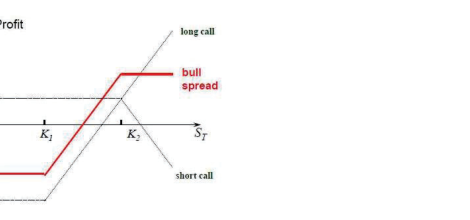
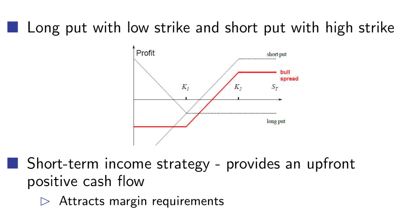
| 差价策略类型 | 期权腿构成 | 期初净现金流 | 最大利润 | 最大亏损 | 盈亏平衡点 (\(S_T\)) |
|---|---|---|---|---|---|
|
利用看涨期权的牛市差价 (借方差价 Debit Spread) |
买入看涨期权 \(K_1=25\) (\(-\$5.31\)) 卖出看涨期权 \(K_2=35\) (\(+\$1.43\)) |
净借方支出：−$3.88 (现金净流出) |
+$6.12 \((35-25) - 3.88\) |
−$3.88 (期初借方支出) |
\( 25 + 3.88 = \mathbf{\$28.88} \) \(K_1 + ext{借方成本}\) |
|
利用看跌期权的牛市差价 (贷方差价 Credit Spread) |
买入看跌期权 \(K_1=25\) (\(-\$0.84\)) 卖出看跌期权 \(K_2=35\) (\(+\$5.99\)) |
净贷方收入：+$5.15 (现金净流入) |
+$5.15 (保留全部权利金) |
−$4.85 \((35-25) - 5.15\) |
\( 35 - 5.15 = \mathbf{\$29.85} \) \(K_2 - ext{贷方收入}\) |
| Spread Type | Option Legs | Net Initial Cash Flow | Max Profit | Max Loss | Breakeven (\(S_T\)) |
|---|---|---|---|---|---|
| Bull Spread using Calls (Debit Spread) |
Long Call \(K_1=25\) (\(-\$5.31\)) Short Call \(K_2=35\) (\(+\$1.43\)) |
Net Debit: −$3.88 (Cash outflow) |
+$6.12 \((35-25) - 3.88\) |
−$3.88 (Initial debit) |
\( 25 + 3.88 = \mathbf{\$28.88} \) \(K_1 + \text{debit}\) |
| Bull Spread using Puts (Credit Spread) |
Long Put \(K_1=25\) (\(-\$0.84\)) Short Put \(K_2=35\) (\(+\$5.99\)) |
Net Credit: +$5.15 (Cash inflow) |
+$5.15 (Keep credit) |
−$4.85 \((35-25) - 5.15\) |
\( 35 - 5.15 = \mathbf{\$29.85} \) \(K_2 - \text{credit}\) |
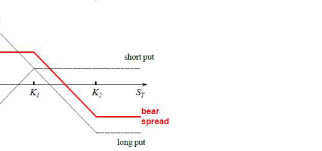
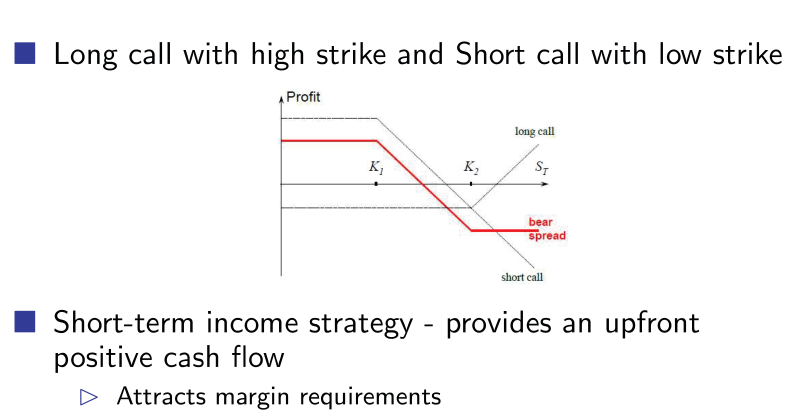
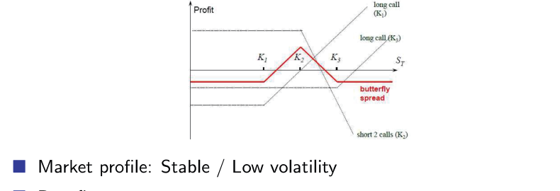
| 到期价格 \(S_T\) | 买入看涨 (55) | 卖出2份看涨 (60) | 买入看涨 (65) | 权利金合计 | 净损益总计 |
|---|---|---|---|---|---|
| \( S_T < 55 \) | 0 | 0 | 0 | -1 | −1 |
| \( 55 \le S_T < 60 \) | \( S_T - 55 \) | 0 | 0 | -1 | \( S_T - 56 \) |
| \( 60 \le S_T < 65 \) | \( S_T - 55 \) | \( 2(60 - S_T) \) | 0 | -1 | \( 64 - S_T \) |
| \( S_T \ge 65 \) | \( S_T - 55 \) | \( 2(60 - S_T) \) | \( S_T - 65 \) | -1 | −1 |
| Terminal Price | Long Call (55) | Short 2 Calls (60) | Long Call (65) | Total Premium | Total P/L |
|---|---|---|---|---|---|
| \( S_T < 55 \) | 0 | 0 | 0 | -1 | −1 |
| \( 55 \le S_T < 60 \) | \( S_T - 55 \) | 0 | 0 | -1 | \( S_T - 56 \) |
| \( 60 \le S_T < 65 \) | \( S_T - 55 \) | \( 2(60 - S_T) \) | 0 | -1 | \( 64 - S_T \) |
| \( S_T \ge 65 \) | \( S_T - 55 \) | \( 2(60 - S_T) \) | \( S_T - 65 \) | -1 | −1 |
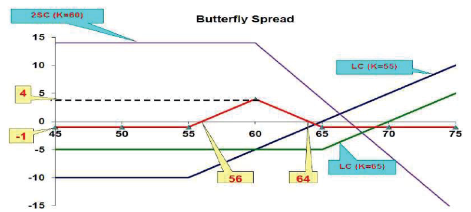
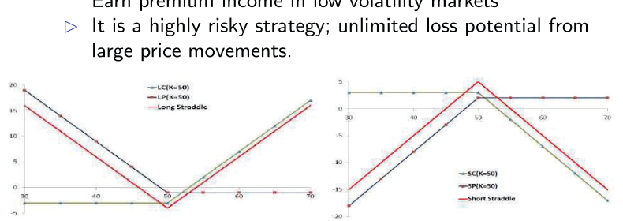
CME 权威定义：“脚踏两只船 (Straddling the fence)” — 同时押注双向。当交易者预期价格即将发生颠覆性突破但无法确定具体突破方向时（例如在财报公布前、重大监管审批揭晓或 CPI 通胀数据发布前），买入跨式期权是标准操作。
CME Definition: “Straddling the fence” — supporting both sides. A long straddle is executed when a trader anticipates a massive price breakout but is uncertain of the direction (e.g., ahead of earnings announcements, regulatory decisions, or CPI releases).
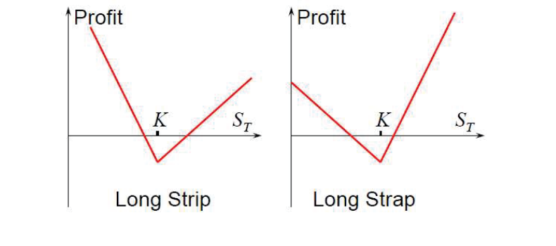
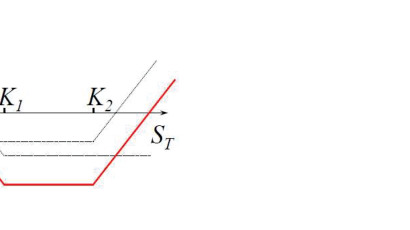
| 到期价格 (\(S_T\)) | 到期总回报 | 期权费成本 | 净损益 | 策略表现 / 盈亏平衡 |
|---|---|---|---|---|
| \( S_T \le 25 \) (大跌看空) | \( 25 - S_T \) | −$2.27 | \( \mathbf{22.73 - S_T} \) | 盈亏平衡点：\( S_T = \mathbf{\$22.73} \) |
| \( 25 < S_T < 35 \) (盘整无序) | 0 | −$2.27 | −$2.27 (最大亏损) | 两只期权均无价值归零作废 |
| \( S_T \ge 35 \) (大涨看多) | \( S_T - 35 \) | −$2.27 | \( \mathbf{S_T - 37.27} \) | 盈亏平衡点：\( S_T = \mathbf{\$37.27} \) |
与平值跨式期权 (\(K=30\)) 对比：跨式组合总成本为 \( 3.16 + 2.78 = \$5.94 \)，其盈亏平衡点为 $24.06 与 $35.94。宽跨式虽然便宜得多（$2.27 vs $5.94），但需要标的资产走出更剧烈的价格波动才能扭亏为盈。
| Terminal Price (\(S_T\)) | Gross Payoff | Premium | Net Profit / Loss | Outcome / Breakeven |
|---|---|---|---|---|
| \( S_T \le 25 \) (Bearish) | \( 25 - S_T \) | −$2.27 | \( \mathbf{22.73 - S_T} \) | Breakeven at \( S_T = \mathbf{\$22.73} \) |
| \( 25 < S_T < 35 \) (Flat) | 0 | −$2.27 | −$2.27 (Max Loss) | Both options expire worthless |
| \( S_T \ge 35 \) (Bullish) | \( S_T - 35 \) | −$2.27 | \( \mathbf{S_T - 37.27} \) | Breakeven at \( S_T = \mathbf{\$37.27} \) |
Comparison with ATM Straddle (\(K=30\)): The straddle costs \( 3.16 + 2.78 = \$5.94 \), creating breakevens at $24.06 and $35.94. The strangle is much cheaper ($2.27 vs $5.94) but requires a wider underlying price excursion to enter positive profit.
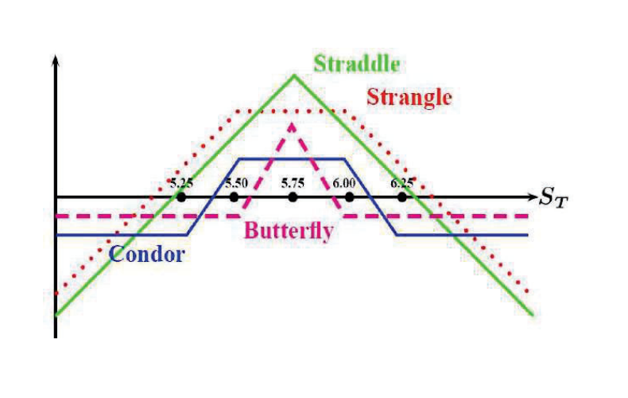